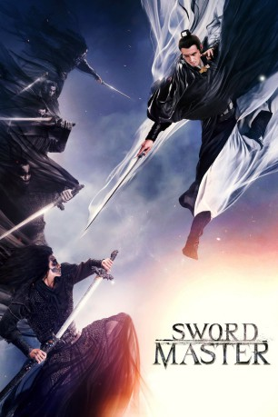
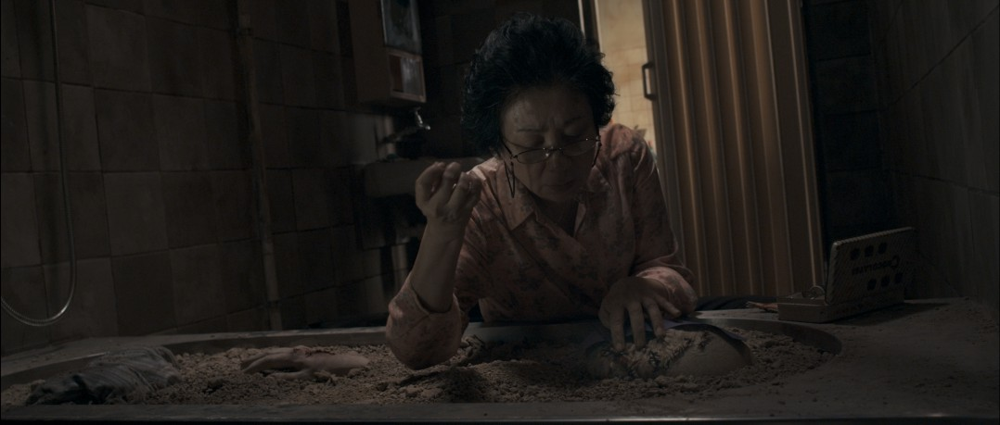

#7397 Sword Master
 
 IMDB-Wertung: 6.1 / 10
IMDB-Wertung: 6.1 / 10  Tomatometer: 67
Tomatometer: 67  Metascore: 0
Metascore: 0 
Yen Shih-San (Gengxin Lin) ist der dritte Meister der legendärsten Schwertkämpfer-Gilde, doch mit der Zeit wurde der mächtige und als unbesiegbar geltende Kämpfer des Tötens überdrüssig, weswegen er Gerüchte über seinen eigenen Tod streut und untertaucht: Unter dem Namen Chi hilft er in einem Bordell aus. So entkommt er nicht nur unzähligen Gegnern, sondern lässt auch seine Verlobte Prinzessin Qiudi (Yiyan Jiang) zurück. Doch seine Vergangenheit lässt sich nicht so einfach abstreifen. Der Schwertkämpfer Yan (Peter Ho) will seinen Erzfeind unbedingt im Kampf besiegen und sich damit einen Namen als bester Schwertkämpfer aller Zeiten machen, deswegen sucht er nach Yen Shih-San, der seiner Meinung nach einfach noch nicht tot sein kann. Auch Qiudi glaubt nicht an das Ableben ihres Verlobten und sinnt auf Rache. Um ihn aus seinem Versteck zu locken, veranstaltet sie ein Massaker bei Yen Shih-Sans alter Gilde.
Jahr: 2016
Dauer: 107 Minuten
FSK: 16
Land: China Studio: EuroVideoTonspuren:
Untertitel: Deutsch,
Auflösung: 1080p (1920x1016) Größe: 6461 MB
Genre: Action, Drama
Regisseur: Tung-Shing Yee
Drehbuch: Tin Nam Chun
Soundtrack:
Darsteller:
 Kenny Lin als Hsieh Shao-Feng / Ah Chi
Kenny Lin als Hsieh Shao-Feng / Ah Chi- Peter Ho als Yen Shih-San
-  Hee Ching Paw als Hsiao Li's mother
- Yiyan Jiang als Mu-Yung Chiu-Ti
- Mengjie Jiang als 'Princess' Hsiao Li
- Moyan Chen als Hsieh Shao-Feng, Teen
- Norman Chu als
- Er Fei als
- Yifan Hao als
- Yifei Hao als
- Daichi Harashima als Hsieh Shao-Feng, Juvenile
- Mu Hong als Madam Mu-Yung
- Edward Ku als Hsieh Shao-Feng
- Kuan-Chung Ku als
- Jiatong Lai als Nameless
- Zhaoxu Lin als
 Jamie Luk als Hsia Hou-Hsing
Jamie Luk als Hsia Hou-Hsing- Jingjing Ma als Miao Tzu
- Maohan Ma als
- Kai Shen als Hsia Hou-Hsing
- Yiren Song als Mu-Yung Chiu-Ti, Juvenile
- Nazeeh Tarsha als
- Nan Tie als Kao Tong
- Shaodong Wei als
- You Wu als
- Xilai Zhang als Chu Yeh-Ching, Juvenile
- Ziyu Zhang als Mu-Yung Chiu-Ti, Teen
- Haiying Zhao als
Datei: X:\HD-Eastern-Classic(N-Z)\Sword Master (2016, FSK16, 1920x1016).mkv seit 08.11.2017
Festplatte: HD Eastern+Western
 Es gibt insgesamt 61 Filme in der Gruppe 'HD-Eastern-Classic(N-Z)'
Es gibt insgesamt 61 Filme in der Gruppe 'HD-Eastern-Classic(N-Z)'